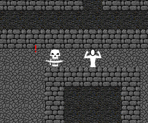

Survival¶
Avoiding combat¶
Underside of Herculeum is dangerous place and sometimes it is better be careful than brave.
When an intelligent creature notices you, small ! is displayed on screen. These creatures often start pursuing you.
When you manage to escape pursuing enemy, they might lose focus and small ? is displayed on screen. Usually they return to their patrol after losing sight of you.
Hint
Try to leave path clear behind you when exploring. This way you can quickly escape if a strong monster notices you.
Warning
Not all creatures are intelligent enough to act like this. They often attack without warning and return to their regular behaviour as soon as the threat is not within immediate reach.
Using potions¶
Some adventurers carry potions when they enter the dungeon and more potions can be found from within. Using potion in correct time can make difference between dying and surviving to run away.
Warning
Healing potions can help to mend damage suffered. They do not work instanteniously, but rather over time. Adventurer has to be informed how much and how soon the potion he is carrying is able to help him and react early enough. When you are about to die, it is usually too late to use potion.